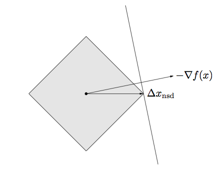
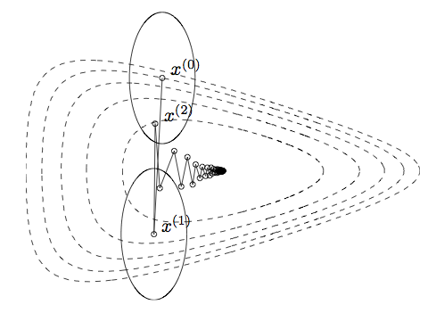
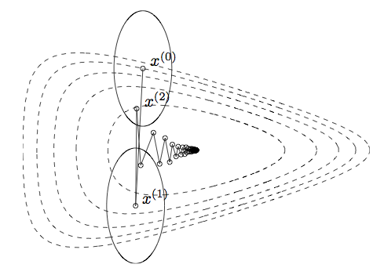

Descent methods for unconstrained problems
Agenda today
Reading:
- Boyd and Vandenberghe, Chapter 9.1-9.4
The problem we want to solve
\[
\text{minimize}_x \quad f(x)
\]
Descent Methods
General algorithm:
Start with a point \(x\)
Repeat
Until the stopping criterion is satisfied, usually \(\|\nabla f(x)\|_2 \le \epsilon\).
Line search types: Exact line search
Step size \(t\) found as \[
t = \text{argmin}_{t > 0}f(x + t \Delta x)
\]
This can be useful if there is an analytic or otherwise quick method of finding the minimum of the function restricted to a ray.
Line search types: Backtracking line search
Step size \(t\) found with an iterative method.
Parameters \(\alpha \in (0, 1/2)\), \(\beta \in (0,1)\) that you specify.
Algorithm: Start at \(t = 1\), repeat \(t \leftarrow \beta t\) until \[
f(x + t \Delta x) < f(x) + \alpha t \nabla f(x)^T \Delta x
\]
Gradient descent
In gradient descent, we take \(\Delta x = - \nabla f(x)\).
Overall algorithm:
Start with a point \(x\)
Repeat
\(\Delta x \leftarrow - \nabla f(x)\).
Line search: Choose step size \(t\) by either backtracking line search or exact line search.
Update: \(x \leftarrow x + t \Delta x\)
Until the stopping criterion is satisfied, usually \(\|\nabla f(x)\|_2 \le \epsilon\).
Convergence time for gradient descent
If \(f\) is strongly convex, we have the result \[
f(x^{(k)}) - p^\star \le c^k (f(x^{(0)}) - p^\star)
\]
\(c \in (0,1)\) depends on properties of the function and the line search type
Much slower (in terms of iterations) than Newton's method
But: we don't have to compute a Hessian
Gradient descent example
Iterates of gradient descent with backtracking line search, for minimizing \(f(x_1, x_2) = \exp(x_1 + 3 x_2 - .1) + \exp(x_1 - 3 x_2 - .1) + \exp(-x_1 - .1)\)
Contours represent the boundaries of the sublevel sets of the function: \(\{x : f(x) \le a\}\).
Steepest descent
Steepest descent: modification of the descent direction.
The normalized steepest descent direction is defined as \[
\Delta x_{nsd} = \text{argmin}_x \{\nabla f(x)^T v : \|v\| = 1\}
\] for some norm \(\|\cdot \|\).
Note: Steepest descent with the standard norm (\(\|\cdot\|_2\)) is the same as gradient descent.
Steepest descent algorithm
The same as gradient descent, but with a different descent direction:
Start with a point \(x\)
Repeat
\(\Delta x \leftarrow \Delta x_{sd}\).
Line search: Choose step size \(t\) by either backtracking line search or exact line search.
Update: \(x \leftarrow x + t \Delta x_{sd}\)
Until the stopping criterion is satisfied, usually \(\|\nabla f(x)\|_2 \le \epsilon\).
Normalized steepest descent direction for a quadratic norm
Ellipse is the set \(\{v: \|v\|_P \le 1\}\)
\(\Delta x_{nsd}\) is the point in the ellipse that extends farthest in the direction of \(-\nabla f(x)\).
Analytic solution for the steepest descent direction: \[
\Delta x_{nsd} = -(\nabla f(x)^T P^{-1} \nabla f(x))^{-1/2} P^{-1}
\nabla f(x)
\]
There is a standard way of normalizing, involving a dual norm (see the text if you're interested), the unnormalized steepest descent search direction is \[
\Delta x_{sd}= -P^{-1} \nabla f(x)
\]
Normalized steepest descent direction for the \(\ell_1\) norm

Examples of the effect of the norm
 

The choice of norm changes dramatically the number of steps needed to reach the optimum
Steps show steepest descent/backtracking line search for quadratic norms
Ellipses are the norm balls around each of the iterates
When can we expect these methods to do well?
From the pictures, we saw that
Condition number of convex sets
Let \(C \subseteq \mathbb R^n\), and let \(q\) be a vector in \(\mathbb R^n\) specifying a direction.
The width of \(C\) in the direction \(q\) is \(W(C, q) = \sup_{z \in C} q^T z - \inf_{ \in C}q^T z\).
The minimum width and maximum width of \(C\) are \[
W_{min} = \inf_{\|q\|_2 = 1} W(C, q)
\] and \[
W_{max} = \sup_{\|q\|_2 = 1} W(C, q)
\]
The condition number of a convex set \(C\) is \(\text{cond}(C) = \frac{W_{max}^2}{W_{min}^2}\).
Measure of how far from spherical the set is.
Convergence bounds and condition number
Recall for gradient descent we had the following result: if \(f\) is strongly convex, \[
f(x^{(k)}) - p^\star \le c^k (f(x^{(0)}) - p^\star)
\] where \(x^{(k)}\) is the \(k\)th gradient descent iterate.
The constant \(c\) depends on the maximum condition number of the sublevel sets of \(f\)
Large condition number corresponds to larger \(c\)
Small condition number corresponds to smaller \(c\).
For example
Gradient descent on a transformed version of the problem before.
Sublevel sets now much closer to spherical, and the algorithm converges quickly.
Re-interpretation of Newton's method
Recall the Newton step: \(-\nabla^2 f(x)^{-1} \nabla f(x)\)
This search direction is the same as the steepest descent direction in the Hessian norm: \(\|\cdot\|_{\nabla^2 f(x)}\)
Turns out the Hessian norm gives a good approximation of the contours of the sublevel sets around the optimal point: this is why it has such fast convergence.